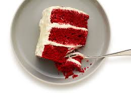

"Red Velvet Cake"

"Description
While some people relish in the velvety texture the cocoa powder gives to the cake, others prefer to leave out the cocoa and relish in the hint of acidity given by the buttermilk and vinegar. As for this pastry chef, he prefers the latter rendition. There is something extraordinary that happens on one's pallet when the formerly mentioned acidity is paired with the decadent sweetness of the cream cheese icing. No matter which rendition one chooses to create, the end result is a bright, sweet and decadent treat.
The cream cheese icing is just as important for producing an unmatched dessert. However, many people put too little emphasis on making an appropriate frosting for such a rich and tasty dessert. For instance, many using a confectione's sugar that is too grainy. The graininess distracts one from noticing ther smooth texture of the cake itself. The other mistake often made is using too much confectioner's sugar. The excess powder overpowers the richness of the cream cheese and leaves one with an overpowering sweetness. The cream chesse should be enjoyed just as much as the sugar.
"Ingredients"
- 2.5 cups cake flour
- 1/2 tsp salt
- 1/2 cup butter
- 2 eggs
- 1 1/2 cups sugar
- 2 oz. red food color
- tsp. vanilla
- 1 cup buttermilk
- 1Tbsp. white vinegar
- 1 tsp. baking soda
- 1 1/2 cups vegetable oil
- 8 oz. cream cheese ,room temperature
- 1/2 cup margarine,room temperature
- 1 pound confectioner's sugar, sifted
- 1 cup pecans, finely chopped
- 1 tsp. pure vanilla extract
"Steps
- Grease and flour three 9 in. round cake pans
- Sift flour and baking soda toghether
- In a medium bowl, combine sugar, oil, eggs, vinegar and vanilla
- With an electric mixer, beat liquid until light and fluffy, about 2 minutes
- Slowly add the flour mixture to the liquid
- Once all of the flour has been added, slowly add buttermilk and food coloring.
- Mix to combine all ingredients
- Evenly divide mixture into the three pans
- Tap the pans to remove bubbles
- Bake for about 30 minutes
- Remove pans from oven and place on cooling racks for 5 minutes
- Flip pans on the wire racks to remove cakes from pan
- Allow cake to completely cool
- While cake cools assemble the icing
- In a medium bowl, mix margarine and cream cheese until light and fluffy
- While mixing, add the sugar and vanilla extract
- Allow to chill for 10 minutes
- Place one layer, tip side down on a cake stand
- Using an offset icing spatula, spread 1/4 inch of icing onto layer
- Repeat with the remaining layers
- Once layers are stacked, spread icing over the center and sides of the cake
- Sprinkle pecans on top and sides of cake